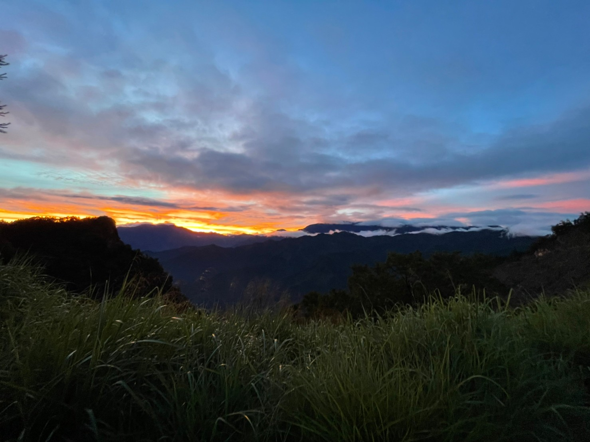
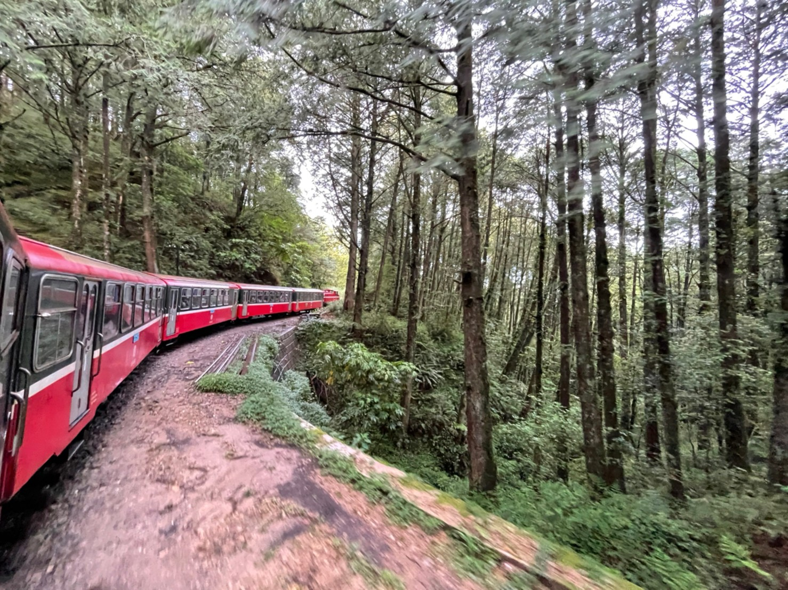

阿里山林業鐵路為臺灣唯一營運的高山林業鐵路系統，亦是臺灣第一個重要文化景觀。 該鐵路乃是日治時代為了將阿里山林場產出之林木向外輸送而建設；林場砍伐業務結束後，客運與觀光成該鐵路的主要功能。 整個系統主要有一條起點自嘉義市嘉義車站、終點在嘉義縣阿里山鄉阿里山車站的主線，以及眾多遍佈阿里山山區的林場線所構成。 今日開放客運的部分，包括主線及其部分區間的「神木線」、「沼平線」、一條為觀日而修築的「祝山線」。 阿里山林鐵尚有幾條「林場線」是以眠月及東埔兩線為主幹分歧出的幾條支線，不過幾乎已經停用廢棄。
而今天要帶各位去的是觀日的『祝山線』，為配合每日的日出時間，阿里山車站會於前一日公告發車時間並預售車票。 從阿里山站開始沿途會經過沼平站、十字分道站、對高岳站及終點祝山站， 但祝山站目前配合車站改建工程，暫時停止載客服務，預計於2022年底改建完成。 目前只行駛到對高岳站，若想到祝山站欣賞更好的觀日風景，需自行徒步30分鐘才會到達。